There are special considerations to adding, subtracting, multiplying, dividing, and raising to powers when negative numbers are involved. This section reviews arithmetic with signed (both positive and negative) numbers.
FigureA.1.1.Alternative Video Lesson
SubsectionA.1.1Signed Numbers
Is it valid to subtract a large number from a smaller one? It may be hard to imagine what it would mean physically to subtract \(8\) cars from your garage if you only have \(1\) car in there in the first place. But mathematics gives meaning to expressions like \(1-8\) using signed numbers.
In daily life, the signed numbers we might see most often are temperatures. Most people on Earth use the Celsius scale; if you’re not familiar with the Celsius temperature scale, think about these examples:
FigureA.1.2.Number line with interesting Celsius temperatures
Figure 2 uses a number line to illustrate these positive and negative numbers. A number line is a useful device for visualizing how numbers relate to each other and combine with each other. Values to the right of \(0\) are called positive numbers and values to the left of \(0\) are called negative numbers.
WarningA.1.3.Subtraction Sign versus Negative Sign.
Unfortunately, the symbol we use for subtraction looks just like the symbol we use for marking a negative number. It will help to identify when a “minus” sign means to subtract and when it means to negate. The key is to see if there is a number to its left, not counting anything farther left than an open parenthesis. Here are some examples.
\(-13\) has one negative sign and no subtraction sign.
\(20-13\) has no negative signs and one subtraction sign.
\(-20-13\) has a negative sign and then a subtraction sign.
\((-20)(-13)\) has two negative signs and no subtraction sign.
CheckpointA.1.4.Identify “Minus” Signs.
In each expression, how many negative signs and subtraction signs are there?
(a)
\(1-9\) has negative signs and subtraction signs.
Explanation.
\(1-9\) has zero negative signs and one subtraction sign.
(b)
\(-12+(-50)\) has negative signs and subtraction signs.
Explanation.
\(-12+(-50)\) has two negative signs and zero subtraction signs.
(c)
\(\dfrac{-13-(-15)-17}{23-4}\) has negative signs and subtraction signs.
Explanation.
\(\dfrac{-13-(-15)-17}{23-4}\) has two negative signs and three subtraction signs.
SubsectionA.1.2Adding
An easy way to think about adding two numbers with the same sign is to simply (at first) ignore the signs, and add the numbers as if they were both positive. Then make sure your result is either positive or negative, depending on what the sign was of the two numbers you started with.
ExampleA.1.5.Add Two Negative Numbers.
If you needed to add \(-18\) and \(-7\text{,}\) note that both are negative. Maybe you have this expression in front of you:
\begin{equation*}
-18+-7
\end{equation*}
but that “plus minus” is awkward, and in this book you are more likely to have this expression:
\begin{equation*}
-18+(-7)
\end{equation*}
with extra parentheses. (How many subtraction signs do you see? How many negative signs?)
Since both our terms are negative, we can add \(18\) and \(7\) to get \(25\) but realize that our final result should be negative. So our result is \(-25\text{:}\)
\begin{equation*}
-18+(-7)=-25
\end{equation*}
This approach works because adding numbers is like having two people tugging on a rope in one direction or the other, with strength indicated by each number. In Example 5 we have two people pulling to the left, one with strength \(18\text{,}\) the other with strength \(7\text{.}\) Their forces combine to pull left with strength \(25\text{,}\) giving us our total of \(-25\text{,}\) as illustrated in Figure 6.
If we are adding two numbers that have opposite signs, then the two people tugging the rope are opposing each other. If either of them is using more strength, then the overall effect will be a net pull in that person’s direction. And the overall pull on the rope will be the difference of the two strengths. This is illustrated in Figure 7.
FigureA.1.6.Working together
FigureA.1.7.Working in opposition
ExampleA.1.8.Adding One Number of Each Sign.
Here are four examples of addition where one number is positive and the other is negative.
\(-15+12\)
We have one number of each sign, with sizes \(15\) and \(12\text{.}\) Their difference is \(3\text{.}\) But of the two numbers, the negative number dominated. So the result from adding these is \(-3\text{.}\)
\(200+(-100)\)
We have one number of each sign, with sizes \(200\) and \(100\text{.}\) Their difference is \(100\text{.}\) But of the two numbers, the positive number dominated. So the result from adding these is \(100\text{.}\)
\(12.8+(-20)\)
We have one number of each sign, with sizes \(12.8\) and \(20\text{.}\) Their difference is \(7.2\text{.}\) But of the two numbers, the negative number dominated. So the result from adding these is \(-7.2\text{.}\)
\(-87.3+87.3\)
We have one number of each sign, both with size \(87.3\text{.}\) The opposing forces cancel each other, leaving a result of \(0\text{.}\)
CheckpointA.1.9.Addition with Negative Numbers.
Take a moment to practice adding when at least one negative number is involved. The expectation is that readers can make these calculations here without a calculator.
(a)
Add \(-1+9\text{.}\)
Explanation.
The two numbers have opposite sign, so we can think to subtract \(9-1=8\text{.}\) Of the two numbers we added, the positive is larger, so we stick with postive \(8\) as the answer.
(b)
Add \(-12+(-98)\text{.}\)
Explanation.
The two numbers are both negative, so we can add \(12+98=110\text{,}\) and take the negative of that as the answer: \(-110\text{.}\)
(c)
Add \(100+(-123)\text{.}\)
Explanation.
The two numbers have opposite sign, so we can think to subtract \(123-100=23\text{.}\) Of the two numbers we added, the negative is larger, so we take the negative of \(23\) as the answer. That is, the answer is \(-23\text{.}\)
(d)
Find the sum \(-2.1+(-2.1)\text{.}\)
Explanation.
The two numbers are both negative, so we can add \(2.1+2.1=4.2\text{,}\) and take the negative of that as the answer: \(-4.2\text{.}\)
(e)
Find the sum \(-34.67+81.53\text{.}\)
Explanation.
The two numbers have opposite sign, so we can think to subtract \(81.53-34.67=46.86\text{.}\) Of the two numbers we added, the positive is larger, so we stick with postive \(46.86\) as the answer.
SubsectionA.1.3Subtracting
You can handle a subtraction such as \(18-5\text{,}\) where a small positive number is subtracted from a larger number. There are other instances of subtraction that might leave you wondering. In such situations, we recommend that you view each subtraction as adding the opposite number.
Original
Adding the Opposite
Subtracting a larger positive number:
\(12-30\)
\(12+(-30)\)
Subtracting from a negative number:
\(-8.1-17\)
\(-8.1+(-17)\)
Subtracting a negative number:
\(42-(-23)\)
\(42+23\)
The idea is if you already comfortable using addition with positive and negative numbers, then this strategy where you convert subtraction to addition means you don’t have all that much new to learn. These examples show how it is done:
CheckpointA.1.10.Subtraction with Negative Numbers.
Take a moment to practice subtracting when at least one negative number is involved. The expectation is that readers can make these calculations here without a calculator.
(a)
Subtract \(-1\) from \(9\text{.}\)
Explanation.
After writing this as \(9-(-1)\text{,}\) we can rewrite it as \(9+1\) and get \(10\text{.}\)
(b)
Subtract \(32-50\text{.}\)
Explanation.
Subtrcting in the oppsite order with the larger number first, \(50-32=18\text{.}\) But since we were asked to subtract the larger number from the smaller number, the answer is \(-18\text{.}\)
(c)
Subtract \(108-(-108)\text{.}\)
Explanation.
After writing this as \(108-(-108)\text{,}\) we can rewrite it as \(108+108\) and get \(216\text{.}\)
(d)
Find the difference \(-5.9-(-3.1)\text{.}\)
Explanation.
After writing this as \(-5.9-(-3.1)\text{,}\) we can rewrite it as \(-5.9+3.1\text{.}\) Now it is the sum of two numbers of opposite sign, so we can subtract \(5.9-3.1\) to get \(2.8\text{.}\) But we were adding numbers where the negative number was larger, so the final answer should be \(-2.8\text{.}\)
(e)
Find the difference \(-12.04-17.2\text{.}\)
Explanation.
Since we are subtracting a positive number from a negative number, the result should be an even more negative number. We can add \(12.04+17.2\) to get \(29.24\text{,}\) but our final answer should be the opposite, \(-29.24\text{.}\)
SubsectionA.1.4Multiplying
Multiplication with negative numbers as straightforward, but it’s possible. Should the product of \(3\) and \(-7\) be a positive number or a negative number? Remembering that we can view multiplication as repeated addition, we can see the result on a number line:
FigureA.1.11.Viewing \(3\cdot(-7)\) as repeated addition
Figure 11 illustrates that \(3\cdot(-7)=-21\text{,}\) and so it seems that a positive number times a negative number will give a negative result.
What about the product \(-3\cdot(-7)\text{,}\) where both factors are negative? Should the result be positive or negative? If \(3\cdot(-7)\) can be seen as adding\(-7\) three times as in Figure 12, then it isn’t too crazy to interpret \(-3\cdot(-7)\) as subtracting\(-7\) three times, as in Figure 12.
FigureA.1.12.Viewing \(-3\cdot(-7)\) as repeated subtraction
This illustrates that \(-3\cdot(-7)=21\text{,}\) and it seems that a negative number times a negative number gives a positive result.
Positive and negative numbers are not the whole story. The number \(0\) is neither positive nor negative. What happens with multiplication by \(0\text{?}\) You can choose to view \(7\cdot0\) as adding the number \(0\) seven times. And you can choose to view \(0\cdot7\) as adding the number \(7\) zero times. Either way, the result is \(0\text{.}\)
FactA.1.13.Multiplication by \(0\).
Multiplying any number by \(0\) results in \(0\text{.}\)
CheckpointA.1.14.Multiplication with Negative Numbers.
Here are some practice exercises with multiplication and signed numbers. The expectation is that readers can make these calculations here without a calculator.
(a)
Multiply \(-13\cdot2\text{.}\)
Explanation.
Since \(13\cdot2=26\text{,}\) and we are multiplying numbers of opposite signs, the answer is negative: \(-26\text{.}\)
(b)
Find the product of \(30\) and \(-50\text{.}\)
Explanation.
Since \(30\cdot50=1500\text{,}\) and we are multiplying numbers of opposite signs, the answer is negative: \(-1500\text{.}\)
(c)
Compute \(-12(-7)\text{.}\)
Explanation.
Since \(12\cdot7=84\text{,}\) and we are multiplying numbers of the same sign, the answer is positive: \(84\text{.}\)
(d)
Find the product \(-285(0)\text{.}\)
Explanation.
Any number multiplied by \(0\) is \(0\text{.}\)
SubsectionA.1.5Powers
For early sections of this book the only exponents you see are the natural numbers : \(\{1, 2, 3, \ldots\}\text{.}\) But negative numbers can arise as the base of a power.
An exponent is shorthand for how many times to multiply by the base. For example, \((-2)^5\) means
Will the result here be positive or negative? Since we can view \((-2)^5\) as repeated multiplication, and since multiplying two negatives gives a positive result, this expression can be thought of this way:
and that lone last negative number will be responsible for making the final product negative.
More generally, if the base of a power is negative, then whether or not the result is positive or negative depends on if the exponent is even or odd. It depends on whether or not the factors can all be paired up to “cancel” negative signs, or if there will be a lone negative factor left.
Once you understand whether the result is positive or negative, for a moment you may forget about signs. Continuing the example, you may calculate that \(2^5=32\text{,}\) and then since we know \((-2)^5\) is negative, you can report
\begin{equation*}
(-2)^5=-32
\end{equation*}
WarningA.1.15.Negative Signs and Exponents.
Expressions like \(-3^4\) may not mean what you think they mean. What base do you see here? The correct answer is \(3\text{.}\) The exponent \(4\)only applies to the \(3\text{,}\) not to \(-3\text{.}\) So this expression, \(-3^4\text{,}\) is actually the same as \(-\mathopen{}\left(3^4\right)\mathclose{}\text{,}\) which is \(-81\text{.}\) Be careful not to treat \(-3^4\) as having base \(-3\text{.}\) That would make it equivalent to \((-3)^4\text{,}\) which is positive\(81\text{.}\)
CheckpointA.1.16.Exponents with Negative Bases.
Here is some practice with natural exponents on negative bases. The expectation is that readers can make these calculations here without a calculator.
(a)
Compute \((-8)^2\text{.}\)
Explanation.
Since \(8^2\) is \(64\) and we are raising a negative number to an even power, the answer is positive: \(64\text{.}\)
(b)
Calculate the power \((-1)^{203}\text{.}\)
Explanation.
Since \(1^{203}\) is \(1\) and we are raising a negative number to an odd power, the answer is negative: \(-1\text{.}\)
(c)
Find \((-3)^3\text{.}\)
Explanation.
Since \(3^{3}\) is \(27\) and we are raising a negative number to an odd power, the answer is negative: \(-27\text{.}\)
(d)
Calculate \(-5^2\text{.}\)
Explanation.
Careful: here we are raising positive\(5\) to the second power to get \(25\) and then negating the result: \(-25\text{.}\) Since we don’t see “\((-5)^2\text{,}\)” the answer is not positive \(25\text{.}\)
SubsectionA.1.6Summary
Addition
Add two negative numbers: add their positive counterparts and make the result negative.
Add a positive with a negative: find their difference using subtraction, and keep the sign of the dominant number.
Subtraction
Any subtraction can be converted to addition of the opposite number. For all but the most basic subtractions, this is a useful strategy.
Multiplication
Multiply two negative numbers: multiply their positive counterparts and make the result positive.
Multiply a positive with a negative: multiply their positive counterparts and make the result negative.
Multiply any number by \(0\text{:}\) the result will be \(0\text{.}\)
Division (not discussed in this section)
Division by some number is the same as multiplication by its reciprocal. So the multiplication rules can be adopted.
Division of \(0\) by any nonzero number always results in \(0\text{.}\)
Division of any number by \(0\) is always undefined.
Powers
Raise a negative number to an even power: raise the positive counterpart to that power.
Raise a negative number to an odd power: raise the positive counterpart to that power, then make the result negative.
Expressions like \(-2^4\) mean \(-\mathopen{}\left(2^4\right)\mathclose{}\text{,}\) not \((-2)^4\text{.}\)
ExercisesA.1.7Exercises
Exercise Group.
1.
Add the following.
\(\displaystyle -8+(-3)\)
\(\displaystyle -6+(-7)\)
\(\displaystyle -2+(-9)\)
Answer1.
\(-11\)
Answer2.
\(-13\)
Answer3.
\(-11\)
Explanation.
Here are two different explanations of how two negative numbers can be added together.
METHOD 1
Use a number line. Let’s find \(-8+(-3)\text{.}\)
First, find \(-8\) on the number line. Next, since we are adding a negative number, we move left, in the negative direction, by \(3\) units. We will reach \({-11}\) on the number line, which is the answer.
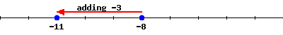
So, \(-8+(-3)={-11}\text{.}\)
Similarly, \(-6+(-7)={-13}\text{,}\) and \(-2+(-9)={-11}\text{.}\)
METHOD 2
A second method asks you to think in terms of money. Let’s find \(-8+(-3)\text{.}\)
The first number is \(-8\text{.}\) Since it’s negative, it’s like you lost \(8\) dollars while gambling at the casino this morning.
The second number is \(-3\text{.}\) Since it’s negative, it’s like you lost \(3\) dollars again while gambling in the casino this afternoon.
Since you lost twice, you ended up losing a lot, implying the answer is negative.
Since you lost \(8\) dollars and then lost \(3\) dollars, it makes sense that you lost a total of \({11}\) dollars. So the final answer is: \(-8+(-3)={-11}\text{.}\)
2.
Add the following.
\(\displaystyle -8+(-1)\)
\(\displaystyle -5+(-3)\)
\(\displaystyle -2+(-7)\)
Answer1.
\(-9\)
Answer2.
\(-8\)
Answer3.
\(-9\)
Explanation.
Here are two different explanations of how two negative numbers can be added together.
METHOD 1
Use a number line. Let’s find \(-8+(-1)\text{.}\)
First, find \(-8\) on the number line. Next, since we are adding a negative number, we move left, in the negative direction, by \(1\) units. We will reach \({-9}\) on the number line, which is the answer.
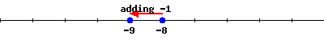
So, \(-8+(-1)={-9}\text{.}\)
Similarly, \(-5+(-3)={-8}\text{,}\) and \(-2+(-7)={-9}\text{.}\)
METHOD 2
A second method asks you to think in terms of money. Let’s find \(-8+(-1)\text{.}\)
The first number is \(-8\text{.}\) Since it’s negative, it’s like you lost \(8\) dollars while gambling at the casino this morning.
The second number is \(-1\text{.}\) Since it’s negative, it’s like you lost \(1\) dollars again while gambling in the casino this afternoon.
Since you lost twice, you ended up losing a lot, implying the answer is negative.
Since you lost \(8\) dollars and then lost \(1\) dollars, it makes sense that you lost a total of \({9}\) dollars. So the final answer is: \(-8+(-1)={-9}\text{.}\)
3.
Add the following.
\(\displaystyle 1+(-8)\)
\(\displaystyle 5+(-2)\)
\(\displaystyle 5+(-5)\)
Answer1.
\(-7\)
Answer2.
\(3\)
Answer3.
\(0\)
Explanation.
Here are two different explanations of how two negative numbers can be added together.
METHOD 1
Use a number line. Let’s find \(1+(-8)\text{.}\)
First, find \(1\) on the number line. Next, since we are adding a negative number, we move left, in the negative direction, by \(8\) units. We will reach \({-7}\) on the number line, which is the answer.
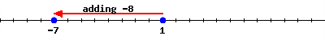
So, \(1+(-8)={-7}\text{.}\)
Similarly, \(5+(-2)={3}\text{,}\) and \(5+(-5)={0}\text{.}\)
METHOD 2
A second method asks you to think in terms of money. Let’s find \(1+(-8)\text{.}\)
The first number is \(1\text{.}\) Since it’s positive, it’s like you won \(1\) dollars while gambling at the casino this morning.
The second number is \(-8\text{.}\) Since it’s negative, it’s like you lost \(8\) dollars while gambling at the casino this afternoon.
Since you lost more money than you won, overall you have lost, implying the answer is negative.
Since you won \(1\) dollars and then lost \(8\) dollars, it makes sense that you lost the difference of \(8\) and \(1\) dollars, which is \({7}\) dollars. So the final answer is: \(1+(-8)={-7}\text{.}\)
4.
Add the following.
\(\displaystyle 1+(-9)\)
\(\displaystyle 8+(-3)\)
\(\displaystyle 4+(-4)\)
Answer1.
\(-8\)
Answer2.
\(5\)
Answer3.
\(0\)
Explanation.
Here are two different explanations of how two negative numbers can be added together.
METHOD 1
Use a number line. Let’s find \(1+(-9)\text{.}\)
First, find \(1\) on the number line. Next, since we are adding a negative number, we move left, in the negative direction, by \(9\) units. We will reach \({-8}\) on the number line, which is the answer.
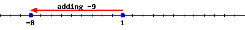
So, \(1+(-9)={-8}\text{.}\)
Similarly, \(8+(-3)={5}\text{,}\) and \(4+(-4)={0}\text{.}\)
METHOD 2
A second method asks you to think in terms of money. Let’s find \(1+(-9)\text{.}\)
The first number is \(1\text{.}\) Since it’s positive, it’s like you won \(1\) dollars while gambling at the casino this morning.
The second number is \(-9\text{.}\) Since it’s negative, it’s like you lost \(9\) dollars while gambling at the casino this afternoon.
Since you lost more money than you won, overall you have lost, implying the answer is negative.
Since you won \(1\) dollars and then lost \(9\) dollars, it makes sense that you lost the difference of \(9\) and \(1\) dollars, which is \({8}\) dollars. So the final answer is: \(1+(-9)={-8}\text{.}\)
5.
Add the following.
\(\displaystyle -6+2\)
\(\displaystyle -4+10\)
\(\displaystyle -7+7\)
Answer1.
\(-4\)
Answer2.
\(6\)
Answer3.
\(0\)
Explanation.
Here are two different explanations of how two negative numbers can be added together.
METHOD 1
Use a number line. Let’s find \(-6+2\text{.}\)
First, find \(-6\) on the number line. Next, since we are adding a positive number, we move right, in the positive direction, by \(2\) units. We will reach \({-4}\) on the number line, which is the answer.
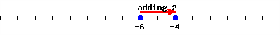
So, \(-6+(2)={-4}\text{.}\)
Similarly, \(-4+(10)={6}\text{,}\) and \(-7+(7)={0}\text{.}\)
METHOD 2
A second method asks you to think in terms of money. Let’s find \(-6+2\text{.}\)
The first number is \(-6\text{.}\) Since it’s negative, it’s like you lost \(6\) dollars while gambling at the casino this morning.
The second number is \(2\text{.}\) Since it’s positive, it’s like you won \(2\) dollars while gambling at the casino this afternoon.
Since you lost more money than you won, overall you have lost, implying the answer is negative.
Since you lost \(6\) dollars and then won \(2\) dollars, it makes sense that you lost the difference of \(6\) and \(2\) dollars, which is \({4}\) dollars. So the final answer is: \(-6+2={-4}\text{.}\)
6.
Add the following.
\(\displaystyle -8+2\)
\(\displaystyle -2+7\)
\(\displaystyle -7+7\)
Answer1.
\(-6\)
Answer2.
\(5\)
Answer3.
\(0\)
Explanation.
Here are two different explanations of how two negative numbers can be added together.
METHOD 1
Use a number line. Let’s find \(-8+2\text{.}\)
First, find \(-8\) on the number line. Next, since we are adding a positive number, we move right, in the positive direction, by \(2\) units. We will reach \({-6}\) on the number line, which is the answer.
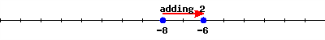
So, \(-8+(2)={-6}\text{.}\)
Similarly, \(-2+(7)={5}\text{,}\) and \(-7+(7)={0}\text{.}\)
METHOD 2
A second method asks you to think in terms of money. Let’s find \(-8+2\text{.}\)
The first number is \(-8\text{.}\) Since it’s negative, it’s like you lost \(8\) dollars while gambling at the casino this morning.
The second number is \(2\text{.}\) Since it’s positive, it’s like you won \(2\) dollars while gambling at the casino this afternoon.
Since you lost more money than you won, overall you have lost, implying the answer is negative.
Since you lost \(8\) dollars and then won \(2\) dollars, it makes sense that you lost the difference of \(8\) and \(2\) dollars, which is \({6}\) dollars. So the final answer is: \(-8+2={-6}\text{.}\)
7.
Add the following.
\(\displaystyle -55+(-83)\)
\(\displaystyle -29+53\)
\(\displaystyle 42+(-62)\)
Answer1.
\(-138\)
Answer2.
\(24\)
Answer3.
\(-20\)
8.
Add the following.
\(\displaystyle -45+(-24)\)
\(\displaystyle -82+28\)
\(\displaystyle 41+(-17)\)
Answer1.
\(-69\)
Answer2.
\(-54\)
Answer3.
\(24\)
Exercise Group.
9.
Subtract the following.
\(\displaystyle 4-8\)
\(\displaystyle 8-4\)
\(\displaystyle 3-15\)
Answer1.
\(-4\)
Answer2.
\(4\)
Answer3.
\(-12\)
Explanation.
It helps to understand that the subtraction sign means that we are adding the opposite. For example, \(3-2=3+(-2)\text{.}\) For many students, it’s easier to change “minus a number” into “adding the opposite number”. This way of looking at subtraction will help us understand more complicated topics later, like subtracting a negative number.
METHOD 1
One way is to use a number line. Let’s do this for \(4-8\text{.}\) First, we rewrite it as
\(4+(-8)\)
Find \(4\) on a number line. Since we are adding a negative number, we move left, in the negative direction, by \(8\) units. We will reach \({-4}\) on the number line, which is the answer.
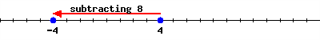
So \(4-8={-4}\text{.}\)
Similarly, \(8-4={4}\) and \(3-15={-12}\text{.}\)
METHOD 2
A second method asks you to think in context; for example when money is involved or the temperature changes. Let’s do this for \(4-8\text{.}\) First, we rewrite it as
\(4+(-8)\text{.}\)
The first number is \(4\text{.}\) Since it’s positive, it’s like you won \(4\) dollars at the casino this morning.
The second number is \(-8\text{.}\) Since it’s negative, it’s like you lost \(8\) dollars in the casino later this afternoon.
Since you lost more money than you won, you ended up losing money overall, implying the answer is negative.
Since you won \(4\) dollars and then lost \(8\) dollars, it makes sense that you lost the difference of \(8\) and \(4\) dollars, which is \({4}\) dollars. So the final answer is: \(4-8={-4}\text{.}\)
10.
Subtract the following.
\(\displaystyle 5-6\)
\(\displaystyle 5-3\)
\(\displaystyle 3-20\)
Answer1.
\(-1\)
Answer2.
\(2\)
Answer3.
\(-17\)
Explanation.
It helps to understand that the subtraction sign means that we are adding the opposite. For example, \(3-2=3+(-2)\text{.}\) For many students, it’s easier to change “minus a number” into “adding the opposite number”. This way of looking at subtraction will help us understand more complicated topics later, like subtracting a negative number.
METHOD 1
One way is to use a number line. Let’s do this for \(5-6\text{.}\) First, we rewrite it as
\(5+(-6)\)
Find \(5\) on a number line. Since we are adding a negative number, we move left, in the negative direction, by \(6\) units. We will reach \({-1}\) on the number line, which is the answer.
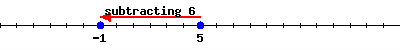
So \(5-6={-1}\text{.}\)
Similarly, \(5-3={2}\) and \(3-20={-17}\text{.}\)
METHOD 2
A second method asks you to think in context; for example when money is involved or the temperature changes. Let’s do this for \(5-6\text{.}\) First, we rewrite it as
\(5+(-6)\text{.}\)
The first number is \(5\text{.}\) Since it’s positive, it’s like you won \(5\) dollars at the casino this morning.
The second number is \(-6\text{.}\) Since it’s negative, it’s like you lost \(6\) dollars in the casino later this afternoon.
Since you lost more money than you won, you ended up losing money overall, implying the answer is negative.
Since you won \(5\) dollars and then lost \(6\) dollars, it makes sense that you lost the difference of \(6\) and \(5\) dollars, which is \({1}\) dollars. So the final answer is: \(5-6={-1}\text{.}\)
11.
Subtract the following.
\(\displaystyle -1-5\)
\(\displaystyle -8-2\)
\(\displaystyle -8-8\)
Answer1.
\(-6\)
Answer2.
\(-10\)
Answer3.
\(-16\)
Explanation.
It helps to understand that the subtraction sign means that we are adding the opposite. For example, \(3-2=3+(-2)\text{.}\) For many students, it’s easier to change “minus a number” into “adding the opposite number”. This way of looking at subtraction will help us understand more complicated topics later, like subtracting a negative number.
METHOD 1
One way is to use a number line. Let’s do this for \(-1-5\text{.}\) First, we rewrite it as
\(-1+(-5)\)
Find \(-1\) on a number line. Since we are adding a negative number, we move left, in the negative direction, by \(5\) units. We will reach \({-6}\) on the number line, which is the answer.
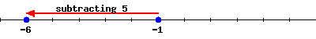
So \(-1-5={-6}\text{.}\)
Similarly, \(-8-2={-10}\) and \(-8-8={-16}\text{.}\)
METHOD 2
A second method asks you to think in context; for example when money is involved or the temperature changes. Let’s do this for \(-1-5\text{.}\) First, we rewrite it as
\(-1+(-5)\text{.}\)
The first number is \(-1\text{.}\) Since it’s negative, it’s like you lost \(1\) dollars at the casino this morning.
The second number is \(-5\text{.}\) Since it’s also negative, it’s like you lost \(5\) dollars more in the casino later this afternoon.
Since you lost twice, you ended up losing a lot, implying the answer is negative.
Since you lost \(1\) dollars and then lost \(5\) dollars, it makes sense that you lost the total of \(1\) and \(5\) dollars, which is \({6}\) dollars. So the final answer is: \(-1-5={-6}\text{.}\)
12.
Subtract the following.
\(\displaystyle -5-3\)
\(\displaystyle -6-1\)
\(\displaystyle -8-8\)
Answer1.
\(-8\)
Answer2.
\(-7\)
Answer3.
\(-16\)
Explanation.
It helps to understand that the subtraction sign means that we are adding the opposite. For example, \(3-2=3+(-2)\text{.}\) For many students, it’s easier to change “minus a number” into “adding the opposite number”. This way of looking at subtraction will help us understand more complicated topics later, like subtracting a negative number.
METHOD 1
One way is to use a number line. Let’s do this for \(-5-3\text{.}\) First, we rewrite it as
\(-5+(-3)\)
Find \(-5\) on a number line. Since we are adding a negative number, we move left, in the negative direction, by \(3\) units. We will reach \({-8}\) on the number line, which is the answer.
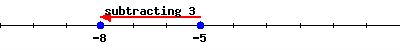
So \(-5-3={-8}\text{.}\)
Similarly, \(-6-1={-7}\) and \(-8-8={-16}\text{.}\)
METHOD 2
A second method asks you to think in context; for example when money is involved or the temperature changes. Let’s do this for \(-5-3\text{.}\) First, we rewrite it as
\(-5+(-3)\text{.}\)
The first number is \(-5\text{.}\) Since it’s negative, it’s like you lost \(5\) dollars at the casino this morning.
The second number is \(-3\text{.}\) Since it’s also negative, it’s like you lost \(3\) dollars more in the casino later this afternoon.
Since you lost twice, you ended up losing a lot, implying the answer is negative.
Since you lost \(5\) dollars and then lost \(3\) dollars, it makes sense that you lost the total of \(5\) and \(3\) dollars, which is \({8}\) dollars. So the final answer is: \(-5-3={-8}\text{.}\)
13.
Subtract the following.
\(\displaystyle -1-(-6)\)
\(\displaystyle -6-(-2)\)
\(\displaystyle -3-(-3)\)
Answer1.
\(5\)
Answer2.
\(-4\)
Answer3.
\(0\)
Explanation.
It helps to understand that the subtraction sign means that we are adding the opposite. For example, \(3-2=3+(-2)\text{.}\) For many students, it’s easier to change “minus a number” into “adding the opposite number”. This way of looking at subtraction will help us understand more complicated topics later, like subtracting a negative number.
METHOD 1
One way is to use a number line. Let’s do this for \(-1-(-6)\text{.}\) First, we rewrite the subtraction as addition of the opposite number:
\(-1+6\)
Find \(-1\) on a number line. Since we are adding a positive number we move right, in the positive direction, by \(6\) units. We will reach \({5}\) on the number line, which is the answer.
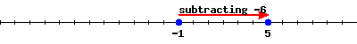
So \(-1-(-6)={5}\text{.}\)
Similarly, \(-6-(-2)={-4}\) and \(-3-(-3)={0}\text{.}\)
METHOD 2
A second method asks you to think in context; for example when money is involved or the temperature changes. Let’s do this for \(-1-(-6)\text{.}\) First, we rewrite the subtraction as addition of the opposite number:
\(-1+6\text{.}\)
The first number is \(-1\text{.}\) Since it’s negative, it’s like you lost \(1\) dollars at the casino this morning.
The second number is \(6\text{.}\) Since it’s positive, it’s like you won \(6\) dollars more in the casino later this afternoon.
Since you won more than you lost, you have a net gain overall, implying the answer is positve.
Since you lost \(1\) dollars and then won \(6\) dollars, it makes sense that you won the difference between \(6\) and \(1\) dollars, which is \({5}\) dollars. So the final answer is: \(-1-(-6)={5}\text{.}\) This is because we can rewrite the subtraction of a negative number in the previous expression as \(-1+(+6)={5}\text{.}\)
14.
Subtract the following.
\(\displaystyle -2-(-8)\)
\(\displaystyle -9-(-2)\)
\(\displaystyle -3-(-3)\)
Answer1.
\(6\)
Answer2.
\(-7\)
Answer3.
\(0\)
Explanation.
It helps to understand that the subtraction sign means that we are adding the opposite. For example, \(3-2=3+(-2)\text{.}\) For many students, it’s easier to change “minus a number” into “adding the opposite number”. This way of looking at subtraction will help us understand more complicated topics later, like subtracting a negative number.
METHOD 1
One way is to use a number line. Let’s do this for \(-2-(-8)\text{.}\) First, we rewrite the subtraction as addition of the opposite number:
\(-2+8\)
Find \(-2\) on a number line. Since we are adding a positive number we move right, in the positive direction, by \(8\) units. We will reach \({6}\) on the number line, which is the answer.
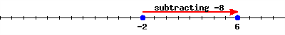
So \(-2-(-8)={6}\text{.}\)
Similarly, \(-9-(-2)={-7}\) and \(-3-(-3)={0}\text{.}\)
METHOD 2
A second method asks you to think in context; for example when money is involved or the temperature changes. Let’s do this for \(-2-(-8)\text{.}\) First, we rewrite the subtraction as addition of the opposite number:
\(-2+8\text{.}\)
The first number is \(-2\text{.}\) Since it’s negative, it’s like you lost \(2\) dollars at the casino this morning.
The second number is \(8\text{.}\) Since it’s positive, it’s like you won \(8\) dollars more in the casino later this afternoon.
Since you won more than you lost, you have a net gain overall, implying the answer is positve.
Since you lost \(2\) dollars and then won \(8\) dollars, it makes sense that you won the difference between \(8\) and \(2\) dollars, which is \({6}\) dollars. So the final answer is: \(-2-(-8)={6}\text{.}\) This is because we can rewrite the subtraction of a negative number in the previous expression as \(-2+(+8)={6}\text{.}\)
Note that in the last case there is no need to waste time multiplying the first two numbers because any number multiplied by \(0\) equals \(0\text{.}\)
Note that in the last case there is no need to waste time multiplying the first two numbers because any number multiplied by \(0\) equals \(0\text{.}\)
In multiplication, each pair of negative signs cancel. If all negative signs are canceled, the product is positive; if there is one negative sign left, the product is negative.
In multiplication, each pair of negative signs cancel. If all negative signs are canceled, the product is positive; if there is one negative sign left, the product is negative.
Note that we cannot simply evaluate \(9^{2}\text{.}\) Instead, we have to apply the square to the whole quantity inside the parentheses- the result is a positive answer.
Note that the negative sign is like “negative one multiplied by....”. For example:
\(\displaystyle \displaystyle{-2=-1\cdot2}\)
\(\displaystyle \displaystyle{-3=-1\cdot3}\)
\(\displaystyle \displaystyle{-4=-1\cdot4}\)
You can see the pattern. This demonstrates that the negative sign can be viewed as multiplication by \(-1\text{.}\)
So, we can change \(-4^{2}\) into \(-1\cdot4^{2}\text{.}\) Since exponents take priority over multiplication, we evaluate \(4^2\)before multiplying by \(-1\text{.}\)
30.
Evaluate the following.
\(\displaystyle (-7)^{2}\)
\(\displaystyle -6^{2}\)
Answer1.
\(49\)
Answer2.
\(-36\)
Explanation.
Remember to use order of operations here: parentheses take priority over exponents, and exponents take priority over multiplication.
Note that we cannot simply evaluate \(7^{2}\text{.}\) Instead, we have to apply the square to the whole quantity inside the parentheses- the result is a positive answer.
Note that the negative sign is like “negative one multiplied by....”. For example:
\(\displaystyle \displaystyle{-2=-1\cdot2}\)
\(\displaystyle \displaystyle{-3=-1\cdot3}\)
\(\displaystyle \displaystyle{-4=-1\cdot4}\)
You can see the pattern. This demonstrates that the negative sign can be viewed as multiplication by \(-1\text{.}\)
So, we can change \(-6^{2}\) into \(-1\cdot6^{2}\text{.}\) Since exponents take priority over multiplication, we evaluate \(6^2\)before multiplying by \(-1\text{.}\)
31.
Evaluate the following.
\(\displaystyle (-3)^{3}\)
\(\displaystyle -1^{3}\)
Answer1.
\(-27\)
Answer2.
\(-1\)
Explanation.
Remember to use order of operations here: parentheses take priority over exponents, and exponents take priority over multiplication.
Note that the negative sign is like “negative one multiplied by....”. For example:
\(\displaystyle \displaystyle{-2=-1\cdot2}\)
\(\displaystyle \displaystyle{-3=-1\cdot3}\)
\(\displaystyle \displaystyle{-4=-1\cdot4}\)
You can see the pattern. This demonstrates that the negative sign can be viewed as multiplication by \(-1\text{.}\)
So, we can change \(-1^{3}\) into \(-1\cdot1^{2}\text{.}\) Since exponents take priority over multiplication, we evaluate \(1^2\)before multiplying by \(-1\text{.}\)
32.
Evaluate the following.
\(\displaystyle (-2)^{3}\)
\(\displaystyle -4^{3}\)
Answer1.
\(-8\)
Answer2.
\(-64\)
Explanation.
Remember to use order of operations here: parentheses take priority over exponents, and exponents take priority over multiplication.
Note that the negative sign is like “negative one multiplied by....”. For example:
\(\displaystyle \displaystyle{-2=-1\cdot2}\)
\(\displaystyle \displaystyle{-3=-1\cdot3}\)
\(\displaystyle \displaystyle{-4=-1\cdot4}\)
You can see the pattern. This demonstrates that the negative sign can be viewed as multiplication by \(-1\text{.}\)
So, we can change \(-4^{3}\) into \(-1\cdot4^{2}\text{.}\) Since exponents take priority over multiplication, we evaluate \(4^2\)before multiplying by \(-1\text{.}\)
When two negative numbers are multiplied together they make a positive number; each pair of negative signs “cancel each other out”.
When an odd number of negative numbers are multiplied together, each pair of negative signs “cancel out” but there is still one negative sign left. That’s why \((-1)^{\text{odd number}}=-1\text{.}\)
Similarly, when an even number of negative numbers are multiplied together each pair of negative signs “cancel out” and there are no negative signs left. That’s why \((-1)^{\text{even number}}=1\text{.}\)
36.
Evaluate the following.
\(\displaystyle 1^{5}\)
\(\displaystyle (-1)^{13}\)
\(\displaystyle (-1)^{18}\)
\(\displaystyle 0^{18}\)
Answer1.
\(1\)
Answer2.
\(-1\)
Answer3.
\(1\)
Answer4.
\(0\)
Explanation.
The solutions are:
\(\displaystyle \displaystyle{ 1^{5}=1, }\)
\(\displaystyle \displaystyle{ (-1)^{13}=-1, }\)
\(\displaystyle \displaystyle{ (-1)^{18}=1, }\)
\(\displaystyle \displaystyle{ 0^{18}=0. }\)
When two negative numbers are multiplied together they make a positive number; each pair of negative signs “cancel each other out”.
When an odd number of negative numbers are multiplied together, each pair of negative signs “cancel out” but there is still one negative sign left. That’s why \((-1)^{\text{odd number}}=-1\text{.}\)
Similarly, when an even number of negative numbers are multiplied together each pair of negative signs “cancel out” and there are no negative signs left. That’s why \((-1)^{\text{even number}}=1\text{.}\)
Exercise Group.
37.
Simplify without using a calculator.
\(\displaystyle{ -8.73 + (-29.4) }\)
Answer.
\(-38.13\)
Explanation.
When we add up two negative numbers, the result will be negative.
We need to find the sum of their absolute value. To add two decimals, make sure to line up the decimal points:
Note that we added an extra \(0\) to the end of \(5.7\) before doing subtraction.
41.
Simplify without using a calculator.
\(\displaystyle{ - 5.09 + 6.4 }\)
Answer.
\(1.31\)
Explanation.
When we add a negative number with a positive number, we need to find the difference of their absolute values. To subtract two decimals, make sure to line up the decimal points:
Note that we added an extra \(0\) to the end of \(6.4\) before doing subtraction.
Finally, since the absolute value of \(- 5.09\) is smaller than the absolute value of \(6.4\text{,}\) the result is positive.
\(- 5.09 + 6.4 = 1.31\)
42.
Simplify without using a calculator.
\(\displaystyle{ - 2.79 + 6.1 }\)
Answer.
\(3.31\)
Explanation.
When we add a negative number with a positive number, we need to find the difference of their absolute values. To subtract two decimals, make sure to line up the decimal points:
When we add a negative number with a positive number, we need to find the difference of their absolute values. To subtract two decimals, make sure to line up the decimal points:
When we add a negative number with a positive number, we need to find the difference of their absolute values. To subtract two decimals, make sure to line up the decimal points:
Note that we added an extra \(0\) to the end of \(7.4\) before doing subtraction.
Finally, since the absolute value of \(- 2.28\) is smaller than the absolute value of \(7.4\text{,}\) the result is positive.
\(- 2.28 + 7.4 = 5.12\)
45.
Simplify without using a calculator.
\(\displaystyle{ 69 - 6.98 }\)
Answer.
\(62.02\)
Explanation.
When doing decimal subtractions, make sure to line up the decimal points. For the integer \(69\text{,}\) the decimal point is at the end of the number, like in \(69.00\)
When doing decimal subtractions, make sure to line up the decimal points. For the integer \(76\text{,}\) the decimal point is at the end of the number, like in \(76.00\)
When we add a negative number with a positive number, we need to find the difference of their absolute values. When doing decimal subtractions, make sure to line up the decimal points. For the integer \(-82\text{,}\) the decimal point is at the end of the number, like in \(-82.00\)
Next, since the absolute value of \(-82\) is bigger than that of \(5.38\text{,}\) the result is negative.
\(-82 + 5.38 = -76.62\)
48.
Simplify without using a calculator.
\(\displaystyle{ -19 + 8.18 }\)
Answer.
\(-10.82\)
Explanation.
When we add a negative number with a positive number, we need to find the difference of their absolute values. When doing decimal subtractions, make sure to line up the decimal points. For the integer \(-19\text{,}\) the decimal point is at the end of the number, like in \(-19.00\)
Next, since the absolute value of \(-19\) is bigger than that of \(8.18\text{,}\) the result is negative.
\(-19 + 8.18 = -10.82\)
Exercise Group.
49.
It’s given that \(26\cdot38=988\text{.}\) Use this fact to calculate the following without using a calculator.
\(\displaystyle{ 0.026(-3.8) = }\)
Answer.
\(-0.0988\)
Explanation.
There is no operation symbol between \(0.026\) and \(-3.8\text{,}\) which implies multiplication.
Next, since “positive times negative is negative,” we know the answer must be negative. Now we can focus on calculating \(0.026 \cdot 3.8\text{,}\) and in the end add back the negative symbol.
It’s given that \(26\cdot38=988\text{.}\) We need to calculate \(0.026 \cdot 3.8\text{.}\)
Notice that \(0.026=\frac{26}{1000}\) and \(3.8=\frac{38}{10}\text{,}\) so we can calculate \(0.026 \cdot 3.8\) in this way:
Once we understand the math, we can use this shortcut.
To change \(26\) to \(0.026\text{,}\) we moved the decimal point to the left by \(3\) place(s).
To change \(38\) to \(3.8\text{,}\) we moved the decimal point to the left by \(1\) place(s).
We move the decimal point of \(988\) to the left by \(3+1=4\) places to get \(0.026\cdot3.8=0.0988\text{.}\)
Again, don’t forget to add back the negative symbol.
\(0.026(-3.8)=-0.0988\)
50.
It’s given that \(33\cdot75=2475\text{.}\) Use this fact to calculate the following without using a calculator.
\(\displaystyle{ 0.033(-0.075) = }\)
Answer.
\(-0.002475\)
Explanation.
There is no operation symbol between \(0.033\) and \(-0.075\text{,}\) which implies multiplication.
Next, since “positive times negative is negative,” we know the answer must be negative. Now we can focus on calculating \(0.033 \cdot 0.075\text{,}\) and in the end add back the negative symbol.
It’s given that \(33\cdot75=2475\text{.}\) We need to calculate \(0.033 \cdot 0.075\text{.}\)
Notice that \(0.033=\frac{33}{1000}\) and \(0.075=\frac{75}{1000}\text{,}\) so we can calculate \(0.033 \cdot 0.075\) in this way:
Once we understand the math, we can use this shortcut.
To change \(55\) to \(0.055\text{,}\) we moved the decimal point to the left by \(3\) place(s).
To change \(51\) to \(0.051\text{,}\) we moved the decimal point to the left by \(3\) place(s).
We move the decimal point of \(2805\) to the left by \(3+3=6\) places to get \(0.055\cdot0.051=0.002805\text{.}\)
\(\displaystyle{ (-0.055)(-0.051) = 0.002805 }\)
Applications.
53.
Consider the following situation in which you borrow money from your cousin:
On June 1st, you borrowed \(1300\) dollars from your cousin.
On July 1st, you borrowed \(340\) more dollars from your cousin.
On August 1st, you paid back \(700\) dollars to your cousin.
On September 1st, you borrowed another \(950\) dollars from your cousin.
How much money do you owe your cousin now?
Answer.
\(\$1{,}890\)
Explanation.
Borrowing money is like adding a negative number. Paying money back is like adding a positive number. To model this situation, we do the following calculation:
Consider the following scenario in which you study your bank account.
On Jan. 1, you had a balance of \(-380\) dollars in your bank account.
On Jan. 2, your bank charged \(50\) dollar overdraft fee.
On Jan. 3, you deposited \(880\) dollars.
On Jan. 10, you withdrew \(630\) dollars.
What is your balance on Jan. 11?
Answer.
\(-\$180\)
Explanation.
Withdrawing money and being charge a fee is like adding a negative number to your bank balance. Depositing money is like adding a positive number to your bank balance. To model this situation, we do the following calculation:
A mountain is \(1100\) feet above sea level. A trench is \(360\) feet below sea level. What is the difference in elevation between the mountain top and the bottom of the trench?
Answer.
\(1460\ {\rm ft}\)
Explanation.
The height of the mountain is simply \(1100\) feet because it is above sea level.
The bottom of the trench is \(-360\) feet in height. Note that it is negative because it is below sea level.
To find the difference in height, we use subtraction:
The difference in elevation from the mountain top to the bottom of the trench is \({1460\ {\rm ft}}\text{.}\)
56.
A mountain is \(1200\) feet above sea level. A trench is \(420\) feet below sea level. What is the difference in elevation between the mountain top and the bottom of the trench?
Answer.
\(1620\ {\rm ft}\)
Explanation.
The height of the mountain is simply \(1200\) feet because it is above sea level.
The bottom of the trench is \(-420\) feet in height. Note that it is negative because it is below sea level.
To find the difference in height, we use subtraction: